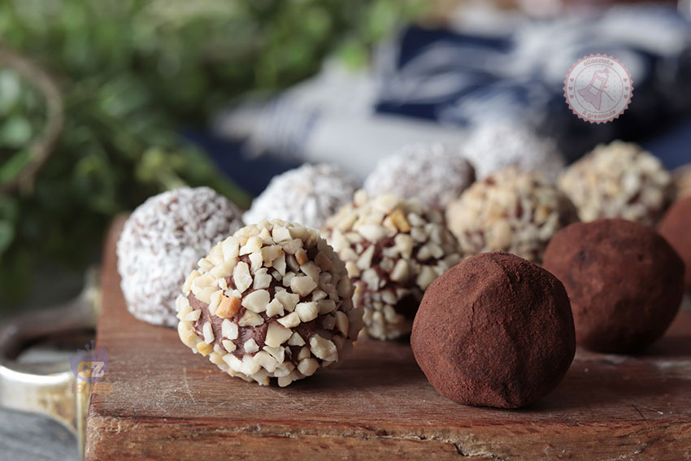

Tartufi al Cioccolato Tradizionali
Morbide e intense chicche di cioccolato che si sciolgono in bocca, ispirate nella forma al pregiato fungo ipogeo. Un cuore avvolgente di ganache ricoperto da un velo amarognolo di cacao o croccante granella.

Ingredienti
Per il Cuore dei Tartufi:
- 200g di Cioccolato fondente (almeno al 60%)
- 100ml di Panna fresca liquida
- 30g di Burro
- 1 cucchiaio di Rum, Cognac o Caffè espresso (opzionale)
- 1 pizzico di Sale fino
Per la Copertura (A scelta):
- Variante Classica: 50g di Cacao amaro in polvere.
- Variante Croccante: 80g di Granella di nocciole Tonda Gentile o pistacchi.
- Variante Bianca: 50g di Cocco rapè o zucchero a velo.
Procedimento
- Preparazione della ganache: Trita finemente il cioccolato fondente con un coltello e raccoglilo in una ciotola capiente.
- Riscaldamento della panna: In un pentolino scalda la panna con il burro fino a sfiorare il bollore.
- Emulsione: Versa la panna calda sul cioccolato tritato, aggiungi un pizzico di sale e l'eventuale liquore. Mescola energicamente con una frusta dal centro verso i bordi fino a ottenere una crema liscia e brillante.
- Riposto e raffreddamento: Copri la ciotola con pellicola a contatto e riponi in frigorifero per almeno 2 ore (fino a quando il composto risulterà lavorabile ma sodo).
- Formatura: Preleva con un cucchiaino poco composto alla volta e ruotalo rapidamente tra le palme delle mani per formare palline leggermente irregolari (simili ai tartufi di terra).
- Copertura: Fai rotolare i tartufi nella ciotola con il cacao amaro (o nella granella scelta) finché non saranno completamente ricoperti.
- Servizio: Disponi i tartufi nei pirottini di carta e riponili in frigo fino al momento di servire.
💡 Note Finali e Consigli dell'Mastro Pasticcere
- Qualità del Cioccolato: Essendo un dolce con pochissimi ingredienti, la qualità del cioccolato fa tutta la differenza: sceglilo con una percentuale di cacao alta e un buon burro di cacao.
- Trucco per non scioglierli: Se le tue mani sono troppo calde, usa dei guanti in nitrile o raffredda le mani sotto l'acqua corrente prima di formare le palline.
- Conservazione: Si conservano in frigorifero chiusi in un contenitore ermetico per 7-10 giorni. Tirali fuori 10 minuti prima di gustarli per assaporarne al meglio la cremosità.